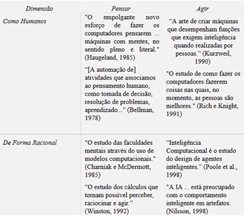

Bem vindo ao Blog da Maria!
Aqui eu falo sobre Inteligência Artificial!
Aqui eu falo sobre Inteligência Artificial!
As definições de Inteligência Artificial podem ser organizadas em duas dimensões principais: Pensar e agir, como humanos ou de forma racional como descrito na figura abaixo com suas respectivas citações:
